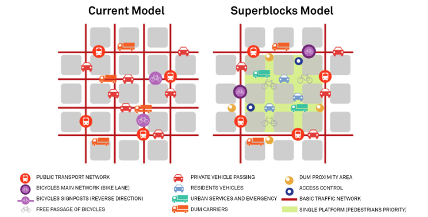

8 Week 8: Temperature and Policy
8.1 Summary
This week we learned about the heat island effect and how entities at various levels (international orgs, counties, cities) aim to tackle this issue through interventions of varying degrees of effectiveness.
What is the heat island effect? Watch this short interpretive dance to find out:
- [insert video]
- in other words, it’s when atmospheric and surface temperatures are higher in urban areas due to more concrete and other dark surfaces which retain heat, less vegetation, buildings blocking visible sky (less dissapation of heat) the feedback loop caused by air conditioning
What effects does it have?
- Disproportionate social effects on health. This paper reveals how previously redlined areas in the US are subject to higher temperatures. (cite)
- Environmental (more AC → more energy needed → fossil fuels burned → pollution)
- Economic (mostly the cost of dealing with health impacts)
Global policy documents, like the UN Sustainable Development Goals, have outlined (mostly vague) strategies for tackling the urban heat island issue.
Here are some strategies that various cities have implemented:
| City | Strategy | Effective? | How just? |
|---|---|---|---|
| Barcelona | Superblocks | Increases pedestrian traffic, reduces noise pollution, reduces nitrogen oxide, reduces particle pollution, increases business | Justice — transforming neighborhood. identified many neighborhoods where this could work, not just wealthy ones. |
| Western Sydney | Cool roads trail (reflective carparks to reduce surface temperatures) | surface temperatures don’t systematically reduce air temperature. but sheds light on how certain neighborhoods might be privy to specific building materials/layouts/plans that attract more heat | Equitable - making reflective streets in hotter neighborhoods |
| Chicago and Baltimore | Tree Vouchers | voluntary, doesn’t mandate | Equal - Anyone has access |
| Seattle | Green factor scoring for new developments/plans | There’s no requirement for where the vegetation has to go (developers could just stuff trees in a corner which wouldn’t help reduce temperatures as much as spacing them out) | equal? every plan moving forward will have the same requirements. |

8.2 Applications
A paper by Li et al. (2022) outlines the disproportionate temperatures experienced by people living in previously redlined neighborhoods.
Data:
They use land surface temperature (LST) data collected from MODIS (Moderate Resolution Imaging Spectroradiometer) satellite which allows them to collect data from both the day and night time (since its revisit time is 1-2 times per day). Using LST over air/surface temp data from meteorological stations gives enables analysis at higher spatial resolution. In the paper, they mention that LST has been found to have a strong correlation with air temperature, which contradicts what we discussed in lecture…
To determine which areas were considered redlined, they used used data from the Home Owners’ Loan Corporation for creditworthiness classifications. They calculated average surface temperatures and gathered data on emergency room visits due to heat-related illnesses for each census block group in the various cities.
Methods:
They started with a t-test to identify differences between neighborhoods that were more or less redlined, then used OLS to assess the relationship (once controlling for social vulnerability). To control for spatial dependence they used Moran’s I and used OLS when spatial autocorrelation was not present, and a spatial regression model when it was.
Results:
They found that historically redlined neighborhoods had higher surface temperatures (both in day and nighttime) than non-redlined neighborhoods, even after controlling for various environmental and socioeconomic factors. Furthermore, residents in historically redlined neighborhoods had higher rates of heat-related emergency department visits.
Limitations:
They suggest that these visits may be caused by the higher LSTs but recognise they could also be caused by other built environment and infrastructural causes such as less access to AC, fewer shaded areas, and poor housing conditions. They also recognise that emergency visits might not fully represent the amount of heat related illnesses as residents with lower socio economic status often face barriers that prevent them from visiting the emergency room (proportion of visits from hispanic residents was lower than census, most likely due to undocumented status). Also LST might not be the best proxy for how humans experience temperature.
Implications:
“Existing heat-hazard prevention and mitigation plans are mostly based on entire region or city-level conditions, while few policies and initiatives pay attention to the inequalities rooted in long-standing spatial patterns of disinvestment and segregation in cities,” (Johnson et al., 2021: 947). Future planning, environmental, and public health policies need to address the legacy of redlining and target resources accordingly.
8.3 Reflection
I didn’t see the BBC article on heat islands, but Bloomberg City Lab published a similar story and it’s one of the studies that influenced my decision to do this Masters program. There are strategies I’ve read about previously and thought “oh wow this is innovative and sounds like it would work” — for example, painting roofs a lighter color to reduce heat absorption — but it’s really interesting to look at them through the lens of justice — that even equity is not the same as justice. It’s easy to look at them now and be hyper critical and skeptical, but it also is really understandable how well-intentioned people with a lack of data or in-depth research / analysis capabilities or critical thinking might decide to implement them in their cities.